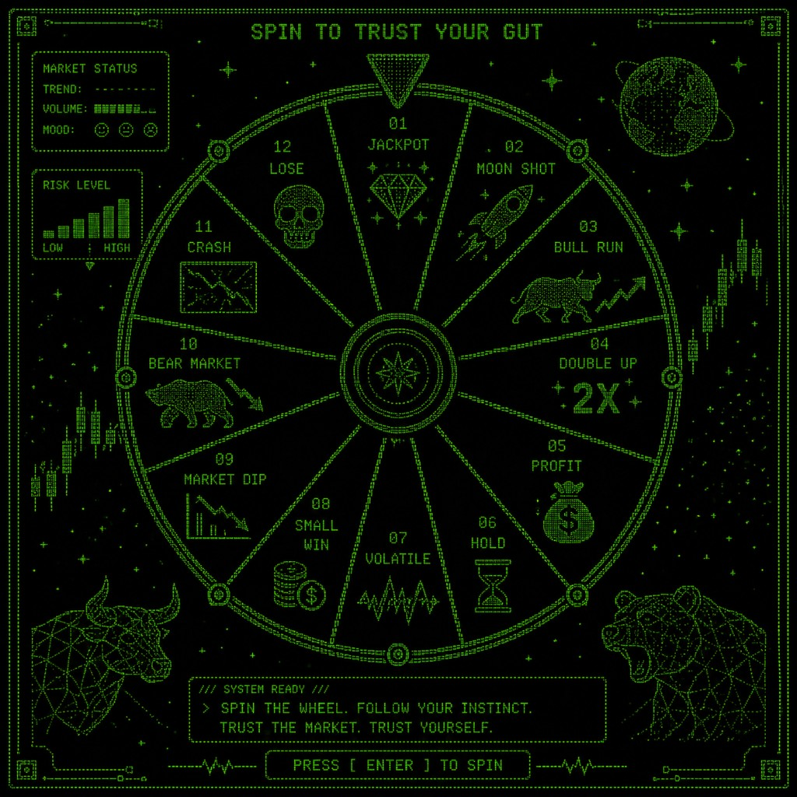

Pick one, or say it out loud — or name ANY other stock you have in mind. It can be any ticker, or any decision you keep avoiding.
Press START and sing the eight notes rising. I am listening to your pitch and your nerve. לחצו START ושירו דו רה מי פה סול לה סי דו בעלייה.
